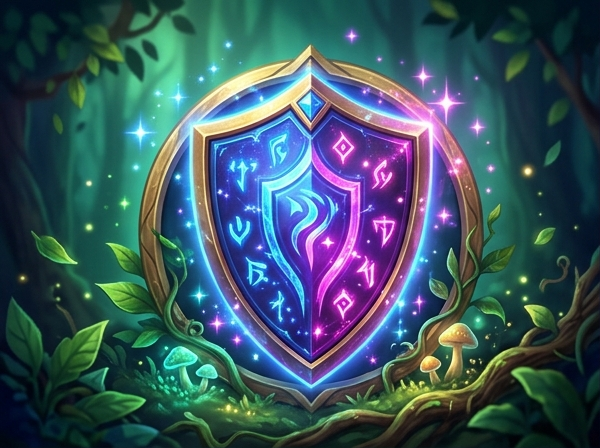

Reto 4: El archipiélago de la unión Patrimonio y folclore
Investiga nuestra historia a través de los testimonios de nuestros mayores, aprende y baila el rondón de Valdemorillo, y lidera la campaña digital #ProtegeNuestroArte para proteger el legado cultural de los pueblos de España.
👵 Misión 4.1: Nuestra historia — El museo de la memoria de nuestros mayores
Nuestra historia y el patrimonio inmaterial residen en los relatos, juegos, recetas y canciones de nuestras abuelas y abuelos.
📝 Ficha de entrevista a mayores
🏛️ Ficha oficial de catálogo (art. 46 CE)
«Jugaban al corro y a la comba en la plaza del pueblo. Para las fiestas de San Blas, todas las familias cocinaban rosquillas de anís y bailaban el Rondón con mantones bordados.»
💃 Misión 4.2: Bailando la Constitución — El rondón de Valdemorillo
Danza tradicional de corro de la Sierra Oeste de Madrid en honor a San Blas (compás ternario 3/4).
🥁 Caja de ritmos en compás ternario (3/4)
Tempo: 108 BPMEl Rondón se baila en compás de 3 tiempos: el golpe fuerte (1) marca el paso de avance y los tiempos (2 y 3) el repiqueteo de castañuelas y cruce.
Haz clic en cada elemento para descubrir cómo vestían los bailarines del Rondón de Valdemorillo:
✍️ Taller de cuartetas octosílabas
Métrica tradicional«Una vieja y un candil / van por el camino, / la vieja tropezó / y se le cayó el candil.»
Estribillo: «Por San Blas sale lo mejor, sale lo mejor, de Valdemorillo la flor.»
Crea una cuarteta octosílaba (4 versos de 8 sílabas) inspirada en el Artículo 46 y el valor de proteger el patrimonio:
📱 Misión 4.3: Campaña digital #ProtegeNuestroArte y coevaluación
Diseño de productos digitales (Reels / Canva) y aplicación de la rúbrica oficial de coevaluación (16 puntos).
🎨 1. Diseñador del producto digital
📋 Rúbrica oficial de coevaluación entre equipos
Evalúa con honestidad el producto de otro equipo (1: Necesita mejorar, 2: Aceptable, 3: Bueno, 4: Excelente).
| Criterio de evaluación | Puntuación (1-4) |
|---|---|
|
1. Mensaje constitucional (art. 46 CE)
Transmite con claridad el deber público y ciudadano de conservar el patrimonio cultural.
|
|
|
2. Contenido sobre el rondón de Valdemorillo
Muestra pasos, copla/estribillo cantado o indumentaria tradicional fidedigna.
|
|
|
3. Calidad técnica y digital
Vídeo: audio nítido, edición fluida (30-60s). Cartel: diseño legible y equilibrado.
|
|
|
4. Creatividad e impacto comunicativo
Originalidad, capacidad para enganchar y potencial de concienciación escolar.
|
|
¡Has completado el Reto 4 y reunido los cuatro pilares constitucionales!
Desde el Bosque de los Derechos hasta el Archipiélago de la Unión, tu aula ha demostrado ser una auténtica comunidad de guardianes democráticos, solidarios y respetuosos con nuestra memoria.



DIPLOMA DE HONOR
«Los poderes públicos garantizarán la conservación y promoverán el enriquecimiento del patrimonio histórico, cultural y artístico de los pueblos de España y de los bienes que lo integran...»
— Artículo 46 de la Constitución Española de 1978 —
Por el presente documento oficial, se certifica y hace público reconocimiento a favor de:
Por su rigurosa investigación de historia oral, rescate del patrimonio inmaterial y catalogación en el Museo Escolar de las vivencias transmitidas por su mayor: